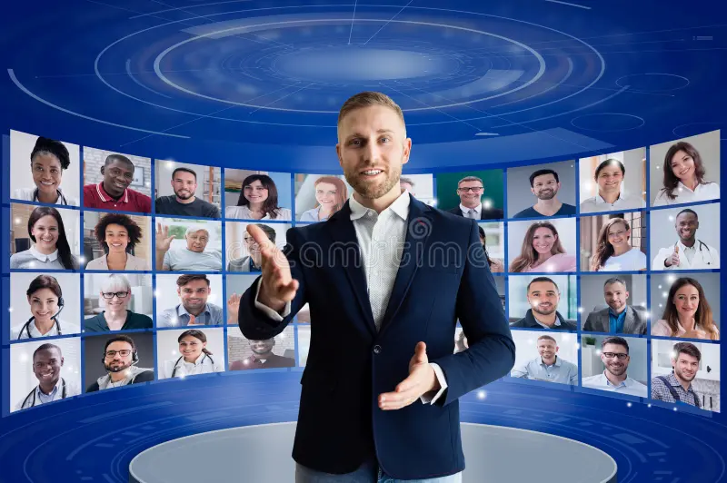

Dag 1: 20/10 Webbutvecklingens framtid
Utforska trender och framtidsutsikter.
Responsiv Design Revolution
Förstå koncepten bakom responsiv design och revolutionera användarupplevelsen över olika enheter.
Optimera för Prestanda: Speed Matters
Ta del av effektiva tekniker för att öka och förbättra prestanda för SEO och användarupplevelse
.Dag 2: 21/10 First: Skapa för alla
Upptäck vikten av tillgänglighet inom webbutveckling och skapa digitala upplevelser som når alla användare.
Färgteori för Front-end Developers
Konstnärlig inblick i färgteori och dess påverkan på användarupplevelsen. Lär dig välja färger med syfte och precision.
Animation Magic med CSS och HTML
Skapa levande och engagerande webbplatser med mästerliga animationstekniker i CSS och HTML.
Dag 3: 22/10 State Management i Moderna JavaScript-ramverk
Utforska state management-tekniker och bästa praxis i populära JavaScript-ramverk som React och Vue.
Från Design till Kod: Effektivt samarbete
Upptäck bästa metoder för att smidigt översätta designkoncept till kod genom samarbete mellan designers och utvecklare.
Vue.js vs. React: Jämförande Analys
Objektiv granskning av styrkor och svagheter hos Vue.js och React för informerade utvecklarbeslut.
Bygga Progressive Web Apps från Grunden
Steg-för-steg handledning om att skapa en progressiv webbapp från grunden med offline-funktionalitet och push-meddelanden.

Om "Bättre Webb konferensen"
"Bättre Webb Programming" är ett ledande evenemang som samlar webbutvecklare för kunskapsutbyte och innovation. Genom seminarier, talare och sessioner utforskar deltagarna viktiga områden som responsiv design, tillgänglighet och prestandaoptimering. Det skapar en engagerad gemenskap för att förbättra webbkvalitet och samarbete för en bättre onlineupplevelse.
Läs MerVårt Ledarskap


Adress
Redegatan 1H, 426 77, Västra Frölunda, Göteborg, Tel: +46 31 704 67 00